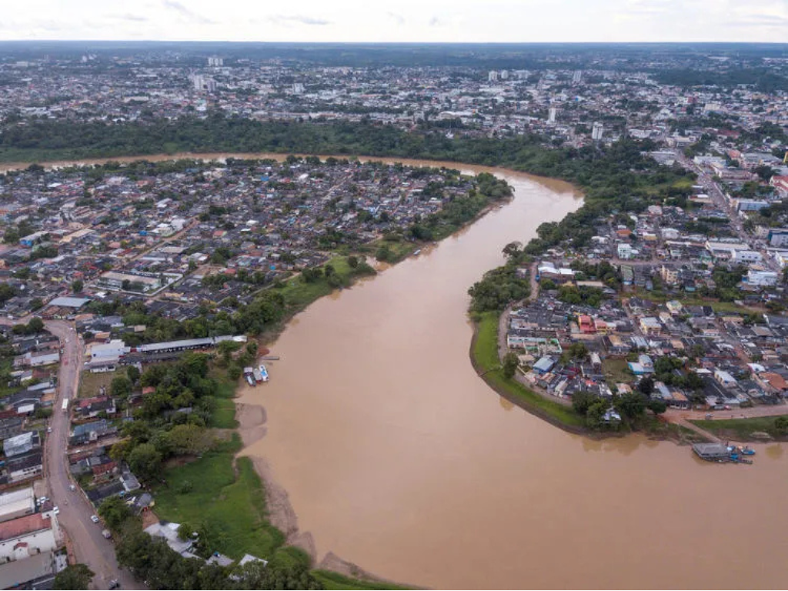

O Acre está localizado na região Norte do Brasil e faz fronteira com a Bolívia e o Peru. Conhecido por sua vasta cobertura da Floresta Amazônica, o estado possui grande riqueza ambiental e importante biodiversidade. Sua capital, Rio Branco, concentra boa parte da população e das atividades econômicas da região. O Acre também tem forte ligação histórica com o ciclo da borracha e com a luta pela preservação ambiental, marcada pela atuação de Chico Mendes. A economia acreana baseia-se principalmente no extrativismo, na agricultura, na pecuária e no comércio, enquanto sua cultura é influenciada pelas tradições indígenas e amazônicas.

Voltar